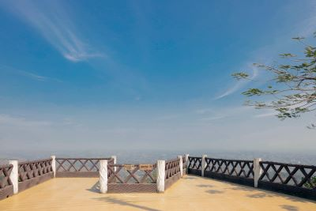

|
Lalbagh Unlike Mughal Emperor Akbar's planned capital at Fatehpur Sikri in Agra or Shah Jahan's capital in Delhi—both constructed with a unitary concept over a relatively short time span—Mughal-era provincial capitals like Dhaka (or Lahore) grew piecemeal, during an extended period of time. Little archaeological and textual evidence exists to suggest that any kind of holistic urban system influenced Mughal Dhaka's growth. Instead, the city's building blocks expanded slowly along the Buriganga River and northward, by needs-based spatial accretions within localised configurations.As for the city's architectural growth, Dhaka never received the kind of imperial patronage that was lavished on North Indian capitals like Delhi, Agra, and Lahore. Visiting Dhaka in 1663, the year Shaista Khan had assumed the vice royalty of Bengal, Manucci described Dhaka as "neither strong nor large, but had many inhabitants; most of its houses were made of straw." During his visit to Dhaka in 1666, Jean-Baptiste Tavernier (1605–1689) observed that Dhaka was predominantly characterized by a linear urban morphology along the Buriganga River, as city-dwellers built houses in the hygienic waterfront area.
|
|
SonargaonSonargaon is one of the old capitals of the historic region of Bengal and was an administrative center of eastern Bengal. It was also a river port. Its hinterland was the center of the muslin trade in Bengal, with a large population of weavers and artisans. According to ancient Greek and Roman accounts, an emporium was located in this hinterland, which archaeologists have identified with the Wari-Bateshwar ruins of the Gangaridai Empire. The area was a base for the Vanga, Gangaridai, Samatata, Sena, and Deva dynasties.
Sonargaon gained importance during the Delhi Sultanate. It was the capital of the sultanate ruled by Fakhruddin Mubarak Shah and his son Ikhtiyaruddin Ghazi Shah. It hosted a royal court and mint of the Bengal Sultanate and also the capital of the Bengal Sultanate under the reign of Ghiyasuddin Azam Shah. Sonargaon became one of the most important townships in Bengal. Many immigrants settled in the area. The Sultans built mosques and tombs. It was later the seat of the Baro-Bhuyan confederacy that resisted Mughal expansion under the leadership of Isa Khan and his son Musa Khan. Sonargaon then became a district of Mughal Bengal. During British colonial rule, merchants built many Indo-Saracenic townhouses in the Panam neighborhood. Its importance was eventually eclipsed by the nearby Port of Narayanganj which was set up in 1862. |
|
SonargaonStar Mosque (also known as Tara Masjid), is a mosque located in Armanitola area, Dhaka, Bangladesh. The mosque has ornate designs and is decorated with motifs of blue stars. It was built in the first half of the 19th century by Mirza Golam Pir (Mirza Ahmed Jan).[1]
In early 20th century, Ali Jan Bepari, a local businessman, financed the renovation of the mosque and added a new eastern verandah. The surface was redecorated with Chinitikri work (mosaic work of broken China porcelain pieces), a decorative style that was popular during the 1930s. The mosque, which previously lacked any historical significance, is one of the few remaining architectural example of the Chinitikri (Chinese pieces) method of mosaic decoration. This decorative technique is found in the striking star motif that is in part the reason for the mosque's current acclaim and popular name, Star Mosque or Sitara Masjid. In 1987, the Ministry of Religious Affairs commissioned Giasul Huque and Zahiruddin to make additions to the prayer hall, which was extended to include two more domes. |
|
Cox's Bazar During the early 9th century, the greater Chittagong area, including Cox's Bazar, was under the rule of Arakan kings until its conquest by the Mughals in 1666.[9] When the Mughal Prince Shah Shuja was passing through the hilly terrain of the present-day Cox's Bazar on his way to Arakan, he was attracted to its scenic and captivating beauty. He commanded his forces to camp there. His retinue of one thousand palanquins stopped there for some time. A place named Dulahazara, meaning "one thousand palanquins," still exists in the area. After the Mughals, the place came under the control of the Tipras and the Arakanese, followed by the Portuguese and then the British.
The name Cox's Bazar originated from British East India Company (EIC) official Hiram Cox, who was appointed as the Superintendent of Palonki (today's Cox's Bazar) outpost. He succeeded Warren Hastings, who became the Governor of Bengal following the passage of the Regulating Act 1773. Cox embarked upon the task of rehabilitation and settlement for the Arakanese refugees in the area.[10] He rehabilitated many refugees in the area, but died in 1799 before finishing his work.
|
|
Sangu MatamuhariSangu-Matamuhari or Sangu Wildlife Sanctuary is a wildlife sanctuary—IUCN category II (habitat/species management area)—situated in Bandarban District, Chittagong Division, Bangladesh. It is part of the Sangu reserve forest. It is under the Lama Forest Division of the Bangladesh Forest Department.[1][2] Its bio-ecological zone is in Chittagong Hills and Chittagong Hill Tracts.[3]
It houses Bangladesh's richest wildlife resource after Sunderbans. It is famous for its remoteness and for its rich array of wildlife, including Asian elephants, gaurs, sambar deers, barking deers, serows, Asian black bears, sun bears, leopards, clouded leopards, Asian golden cats, marbled cats, leopard cats, binturongs, western hoolock gibbons, slow lorises, crab-eating macaques, capped langurs, reticulated pythons, Arakan forest turtles, Asian giant tortoises, great hornbills and spotted owlets. There have also been uncertain reports of vagrant tigers in the forest reserve by local indigenous people. |
|  |
NilachalNilachala is a place of religious significance in Hinduism and is one of the four centres of pilgrimage called the Char Dhams. Religious teachers like Ramanuja and Vishnuswami are regarded to have visited Nilachala in the twelfth-century and established monasteries, referred to as mathas. The theologian Nimbarka is believed to have visited the city of Purti, and the saint Chaitanya is believed to have spent eighteen years at Nilachala.
According to the Skanda Purana, King Indradyumna of Avanti is said to have dreamt of the deity Nilamadhava. The king is regarded to have dispatched many priests and messengers in the search of this elusive deity, regarded as a form of Vishnu. Finally, Vidyapati, one of the priests of Indradyumna, located the image of Nilamadhava at Nilachala, at the sacred region of Purushottama Kshetra, and took the news back to the king. The image of the deity vanished before Indradyumna's arrival. After being propitiated, Vishnu is stated to have offered instructions for the construction of the Jagannath temple of Puri, also in Nilachala.[3][4] |